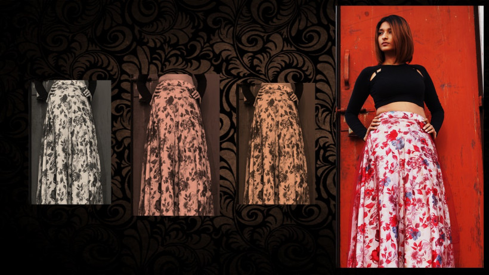
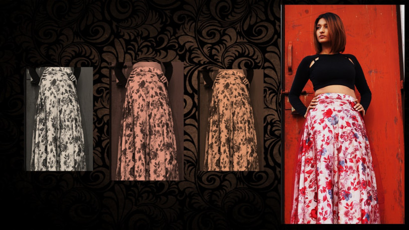
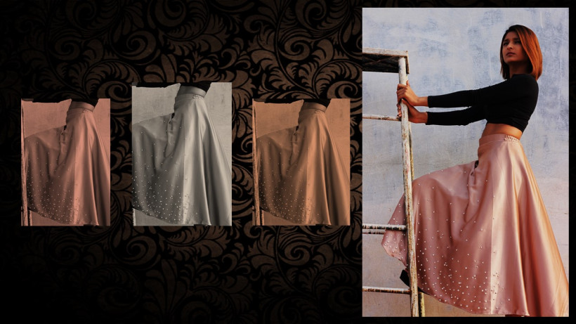
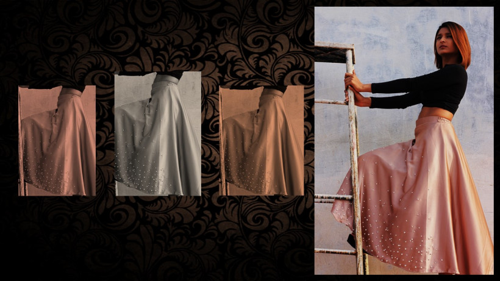

Golden Skirt

Make a stunning appearance at a party wearing this golden colored skirt. Made from satin and net, this skirt will keep you comfortable all day long. Featuring a flared design, this skirt can be paired with a snazzy top for a chic look.

Make a stunning appearance at a party wearing this golden colored skirt. Made from satin and net, this skirt will keep you comfortable all day long. Featuring a flared design, this skirt can be paired with a snazzy top for a chic look.
Floral Skirt.
Make your presence felt in a get together party wearing this stunning piece. The skirt is made of satin fabric with a net layer, which will keep you at ease all day long. The all over floral print along with flared design makes this skirt a must-buy! Pair it with your favorite plain top and white stilettos for an attractive look.

Make your presence felt in a get together party wearing this stunning piece. The skirt is made of satin fabric with a net layer, which will keep you at ease all day long. The all over floral print along with flared design makes this skirt a must-buy! Pair it with your favorite plain top and white stilettos for an attractive look.

Floral Skirt 2
Make your presence felt in a get together party wearing this stunning piece. The skirt is made of satin fabric with a net layer, which will keep you at ease all day long. The all over floral print along with flared design makes this skirt a must-buy! Pair it with your favorite plain top and white stilettos for an attractive look.

Make your presence felt in a get together party wearing this stunning piece. The skirt is made of satin fabric with a net layer, which will keep you at ease all day long. The all over floral print along with flared design makes this skirt a must-buy! Pair it with your favorite plain top and white stilettos for an attractive look.
Pearl embellished skirt
You will definitely be praised for your sartorial choices when you wear this beige colored skirt from the house of Diksha Singh. Made from satin, this skirt will feel like feather against the skin. Featuring flared design and faux pearl embellishment on the front, this skirt can be paired with a crop top for an elegant look.

You will definitely be praised for your sartorial choices when you wear this beige colored skirt from the house of Diksha Singh. Made from satin, this skirt will feel like feather against the skin. Featuring flared design and faux pearl embellishment on the front, this skirt can be paired with a crop top for an elegant look.

Floral embellished skirt
Make men go weak in the knees by wearing this pink colored skirt. Made from tissue fabric, this skirt will stay soft against your skin. Featuring a flared design with floral embellishment on the side, this skirt can be paired with a stylish crop top for a dashing look.

Make men go weak in the knees by wearing this pink colored skirt. Made from tissue fabric, this skirt will stay soft against your skin. Featuring a flared design with floral embellishment on the side, this skirt can be paired with a stylish crop top for a dashing look.